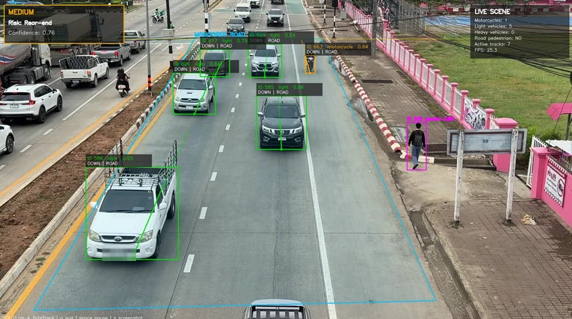
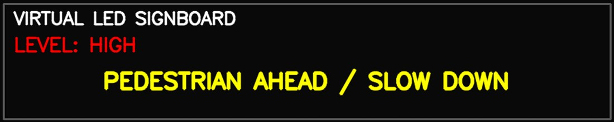

Senior project · still in development · Mae Fah Luang University
Real-Time Smart Road Accident Risk Warning
A roadside camera watches one stretch of road and, about once a second, works out which kind of accident that road is most exposed to right now — then says so in plain words a driver or a traffic officer can act on.

What we set out to do
Most road-safety systems either count traffic or detect a crash after it has already happened. We wanted something in between: a fixed roadside camera that looks at the scene as it is right now and says which type of accident this road is currently most exposed to.
That distinction is the whole point, because each type calls for a different warning. A queue of heavy vehicles is a rear-end problem. Someone stepping into the carriageway is a pedestrian problem. "Be careful" helps nobody; "keep your distance" or "pedestrian ahead" does.
So the project has three targets: train a multi-class model on Thailand's historical accident records, make a live camera produce the same kind of information that model expects, and put the answer on screen clearly enough to be useful — including a virtual LED signboard that holds a message steady instead of flickering between them.
We group accidents into five risk classes: run-off-road, rear-end, head-on, side-impact (including intersections) and pedestrian.
One fixed camera, daytime, running on a laptop. It estimates which type of accident is most likely in view. It does not predict that a crash will happen, it is not a crash detector, and it is not driver-assistance fitted to a vehicle. Weather, province and road type are set per camera rather than sensed. Nothing identifying is kept — no face or plate recognition, and the log stores only a timestamp, the predicted class, the confidence and the warning level.
How the system fits together
The model never sees the video. It sees a short row of numbers — how many of each kind of vehicle are on the road, whether anyone is walking on it, the time, the weather, the road type. The camera's only job is to produce that row honestly, which turned out to be the harder half.
Roadside camera
One fixed view of the road, 1080p at 30fps in the demo setup.
YOLO detection
Cars, motorcycles, buses, trucks and people. ByteTrack gives each one a lasting ID.
Road filters
Drop anything outside the road area or above the detection line, and tell riders apart from pedestrians.
Feature row
Counts by class, pedestrian flag, time of day, weekend flag, weather, road type, province.
LightGBM
Returns a probability for each of the five risk classes; the highest one wins.
Warning and log
Confidence decides the warning level and the message on the LED signboard. Every call is logged.
Stages 03 to 06 are where most of my time went. Stage 02 is largely configuration.
The data
The model is trained on historical records, not on video. We used Thailand's open road accident data from the Ministry of Transport, covering 2019 to 2025: 143,124 raw rows, reduced to 139,924 after removing duplicates, then split 80/20 for training and testing.
The class balance is the defining problem:
| Risk class | Records |
|---|---|
| Run-off-road | 83,199 |
| Rear-end | 46,159 |
| Head-on | 6,798 |
| Side-impact | 2,138 |
| Pedestrian | 1,630 |
The largest class holds about fifty times the records of the smallest. A model trained naively on that learns to answer "run-off-road" and is right most of the time while being useless for the rare classes — which are exactly the ones a warning system exists for.
That decided the metric. We ranked models on macro recall, which averages the recall of every class equally no matter how rare it is, with macro F1 as the tie-breaker. Accuracy would have rewarded the lazy answer.
Features
The feature set is limited to what a camera can actually supply, which is a shorter list than the accident records contain:
| Feature | Where it comes from |
|---|---|
| Motorcycle count | Detection, inside the road area |
| Light vehicle count | Detection, inside the road area |
| Heavy vehicle count | Detection, inside the road area |
| Pedestrian present | Detection, after rider filtering |
| Hour, as sine and cosine | Clock |
| Weekend flag | Calendar |
| Weather, road type, province | Set per camera |
Encoding the hour as a sine and cosine pair rather than a plain number was a small but necessary choice: 23:00 and 00:00 are next to each other in reality and twenty-three apart as integers.
Choosing a model
I trained four classifiers against four ways of handling the imbalance and ranked every combination on macro recall:
- Classifiers — LightGBM, XGBoost, CatBoost and random forest.
- Imbalance handling — none, random oversampling, random undersampling and SMOTE.
LightGBM with random oversampling came out on top. Resampling made the biggest difference to the rare classes: head-on and side-impact recall improved substantially compared with training on the raw distribution.
| Model | LightGBM |
|---|---|
| Imbalance handling | Random oversampling |
| Selection rule | Macro recall first, macro F1 as tie-breaker |
| Test macro recall | 0.7582 |
Run-off-road and pedestrian end up the easiest classes to get right. Side-impact is still the hardest, and the reason is visible in the feature list above: telling an intersection conflict from ordinary traffic really needs direction and turning movement, and the current features only count what is present, not where it is going.
The selected model is exported as a serialised pipeline and loaded by the camera application at start-up, which keeps a prediction cheap enough to run continuously.
Making the detector behave
The model was the easy half. A detector pointed at a real road sees a great deal that is none of its business, and every one of those mistakes becomes a wrong number in the feature row and then a wrong warning.
- The opposite carriageway. The camera sees both directions, and traffic on the far side was inflating counts for a road it had nothing to do with. I marked the monitored road as a polygon and added a detection line to cut off distant, unstable detections — the cyan outline in the frame above.
- Riders counted as pedestrians. YOLO is right that a motorcycle rider is a person, but the feature row then claimed someone was walking on an empty road, and the pedestrian flag is a strong signal. Two rules fixed it: a person overlapping a motorcycle is a rider, not a pedestrian, and a person outside the road area does not count either. That second rule is what you can see working in the frame above.
- Flicker between frames. A single frame is a noisy sample. ByteTrack gave every object a lasting identity, which steadied the counts and opened the door to direction and trajectory work later.
- A crowded overlay. The first version printed everything over the video and was unreadable. It became a compact panel: the call on one side, the numbers behind it on the other.
The pattern across all four is the same — the cheap, reliable fix was to narrow what the system is allowed to look at, not to reach for a bigger model.
Turning a prediction into a warning
A class name and a probability are no use to anyone on the road. The end of the pipeline is a virtual LED signboard — the part road users would actually read — alongside the overlay on the monitoring screen.
The model returns a probability for each class and the highest one is taken. A warning only appears if that probability clears 0.55; below it the board reads DRIVE SAFELY.

| Confidence | Warning level | What is shown |
|---|---|---|
| below 0.55 | Normal | DRIVE SAFELY |
| 0.55 – 0.79 | Medium | The predicted risk type |
| 0.80 and above | High | The predicted risk type |
That 0.55 is an application setting, not something from training. We started at 0.50, found during demo runs that it flipped between messages too readily, and nudged it up until the board held still.
Each class maps to wording a driver can act on rather than a label:
| Predicted risk | Signboard message |
|---|---|
| Rear-end | SLOW DOWN / KEEP DISTANCE |
| Side-impact | SLOW DOWN / CHECK BOTH SIDES |
| Pedestrian | PEDESTRIAN AHEAD / SLOW DOWN |
| Run-off-road | REDUCE SPEED / DRIVE CAREFULLY |
| Head-on | KEEP LEFT / DO NOT OVERTAKE |
Holding a message steady needed its own settings: predictions update once a second, smoothed over the last two, a message stays up for at least two seconds, and an empty road reverts to DRIVE SAFELY after three. Every call is also appended to a CSV log with its timestamp, class, confidence, level and the counts behind it — which is what makes a wrong warning diagnosable rather than mysterious.
Where it actually stands
Being precise about this matters more than making it sound finished.
- Working. The whole path runs: detection, filtering, feature row, model call, on-screen warning, LED signboard and CSV log, with logged events and saved frames as evidence.
- Not established. It has never run on a live public road, nobody outside the team has evaluated it, and there is no measurement of whether it would change how anyone drives.
- Known weak spot. Side-impact and head-on are still hard to tell apart, because the features count what is present rather than where it is heading.
What comes next
What is shown here is the pre-project prototype, and the work is continuing. We have not been able to test it across different roads, camera angles or lighting yet, mostly because we could not get hold of suitable CCTV footage. This semester the main change is dropping the hand-drawn road region altogether and evaluating the whole scene the camera can see, which should also remove the per-camera setup step. Direction and speed features are the other thread, since that is what side-impact needs.
Who did what
Three students, with me as project manager. I did most of the hands-on work — dataset preparation, feature design, model training and selection, the computer-vision integration, the filtering logic and the debugging. My teammates, Sai Zaw Linn and Min Maung Maung, contributed research, review, testing and presentation material. Our advisor is Asst. Prof. Dr. Pattaramon Vuttipittayamongkol.
The code is not public yet. It carries trained model files and coursework belonging to other groups, so it needs separating first.